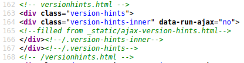

Releases v3.0.dev1 (2021-10-03)¶
Page contents:
v3.0.dev1¶
Release date v3.0.dev1: 2021-10-03
Published to docs server
Attention
As of 2021-10-04 this version is not available from Docker hub yet. We first have to solve some license issues there.
However you get the source of this prerelease v3.0.dev1
and do a docker build on your own.
NEW: Facility to show "version hints" on each page¶
Readers often forget or don't notice that they are seeing the latest version a manual. The included v4.7.dev1 release of our theme provides a solution. "version hints" can be shown on each and every html page of a manual.
Each html page now provides a structure to fill in version hints:
Fill the div
div.version-hints-innerwith whatever you want to be shown.By default and for local renderings nothing will be shown.
When rendering for the docs server ajax is activated:
As indicated in the comment ((todo!)) the content of file
_static/ajax-version-hints.htmlgets filled in using in ajax call. The means: The uploader of the manual only has to update a single file and all pages will come up showing that hint.Example of
_static/ajax-version-hints.html:The advantage of this solution is speed and simplicity: Version hints can be activated and modified by uploading a single file. Changes take effect immediately. Nothing needs to be rerendered and deployed.
The drawback however is a short "blink" of all pages, because they load and display first and then adjust for the hint.
Another solution would be to turn ajax off and insert the hint directly into each html page like so. This avoids any flickering.
And here's an example of what you would see as result:
Ported to Python-3¶
Changed in version 3.0.
The biggest change of this release are internal: The container now uses Python-3 instead of outdated and unmaintained Python-2.
For being able to make this upgrade the toolchain RenderDocumentation was ported to PY3.
The toolchain was ported, but not refactored yet. This will be the next step once the transistion to container v3.0 has been made.
For some Sphinx extensions we don't need a tailored "hacked-for-python2" version any more.
Latest Sphinx v4.2.0 (was v1.8.5)¶
Because of PY3 we now can use the latest Sphinx version and thus have caught up to the "state of the art" Sphinx. It now produces some slightly differen html constructs. The v4.7.dev1 release of our Sphinx theme accounts for this and should be backwards compatible.
Fixed: Order of CSS files¶
Our own _static/theme.css is now loaded AFTER Sphinx extension styles
have been loaded. So, for example, we can easily override sphinx-tab styles
and keep our font-family and border-colors.
Updated: Display of .confval blocks¶
As an experiment and proposal the style of .confval sections was changed.
Example of the new appearance:
More changes¶
There now is a
make helpandmake buildcommand.…